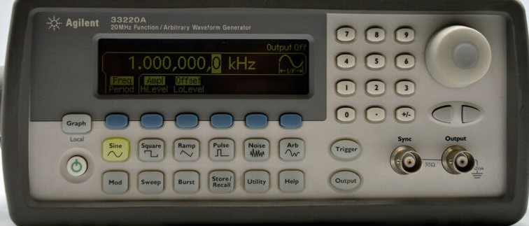

ה-Agilent 33220A הוא מחולל פונקציות דיגיטלי בעל דיוק גבוה ביותר ויציבות תדר מעולה. בניגוד למחוללים אנלוגיים מבוססי קבלים ומתנדים (VCO) אשר רגישים לשינויי טמפרטורה וסחיפת רכיבים, מכשיר זה משתמש בטכנולוגיית DDS (Direct Digital Synthesis) המייצרת אותות ישירות מנתונים דיגיטליים השמורים בזיכרון.
בטכנולוגיית DDS, צורת הגל (סינוס, ריבוע, שן-מסור או אות מותאם אישית) מיוצגת על ידי סדרת נקודות דיגיטליות השמורות בזיכרון המכשיר. מיקרו-מעבד שולף נקודות אלו בקצב מדויק המוגדר על ידי מתנד גביש יציב, ומעביר אותן דרך ממיר דיגיטלי לאנלוגי (DAC) מהיר ומסנן מעביר נמוכים לקבלת אות רציף ונקי מרעשים.
להלן הלוח הקדמי של ה-Agilent 33220A. המכשיר מתאפיין במסך תצוגה גרפי מלא המציג את תדירות, אמפליטודה, מתח ה-Offset וצורת הגל הנוכחית.

להלן מיפוי הלחצנים של ה-Agilent 33220A כפי שמופיעים בתיעוד הניסויים:
לחצו על כל אחת מההדגמות המעשיות להלן כדי לראות את שלבי העבודה המדויקים במעבדה:
לפניכם סרטוני הדרכה שימושיים ב-YouTube לעבודה נכונה עם המחולל הדיגיטלי: